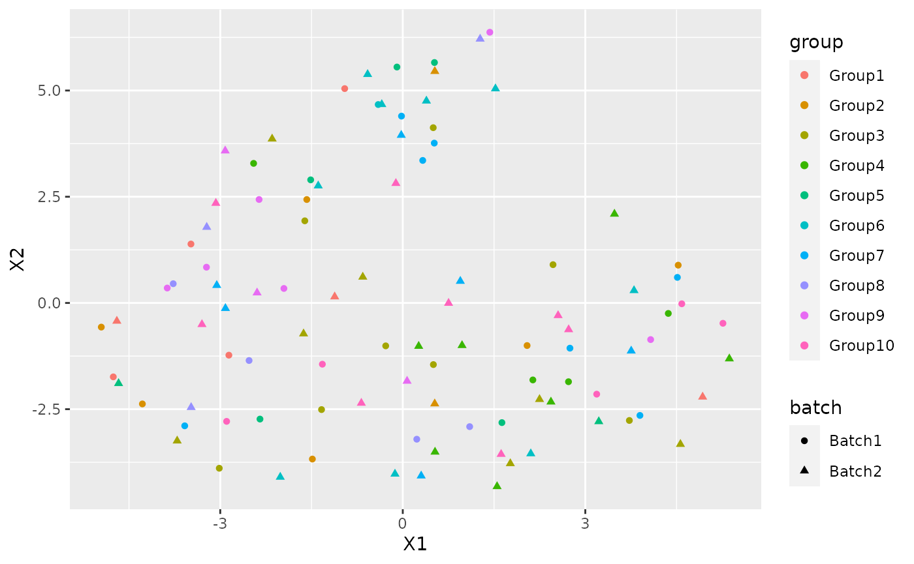

library(splatter) #> Loading required package: SingleCellExperiment #> Loading required package: SummarizedExperiment #> Loading required package: GenomicRanges #> Loading required package: stats4 #> Loading required package: BiocGenerics #> Loading required package: parallel #> #> Attaching package: 'BiocGenerics' #> The following objects are masked from 'package:parallel': #> #> clusterApply, clusterApplyLB, clusterCall, clusterEvalQ, #> clusterExport, clusterMap, parApply, parCapply, parLapply, #> parLapplyLB, parRapply, parSapply, parSapplyLB #> The following objects are masked from 'package:stats': #> #> IQR, mad, sd, var, xtabs #> The following objects are masked from 'package:base': #> #> anyDuplicated, append, as.data.frame, basename, cbind, colnames, #> dirname, do.call, duplicated, eval, evalq, Filter, Find, get, grep, #> grepl, intersect, is.unsorted, lapply, Map, mapply, match, mget, #> order, paste, pmax, pmax.int, pmin, pmin.int, Position, rank, #> rbind, Reduce, rownames, sapply, setdiff, sort, table, tapply, #> union, unique, unsplit, which.max, which.min #> Loading required package: S4Vectors #> #> Attaching package: 'S4Vectors' #> The following object is masked from 'package:base': #> #> expand.grid #> Loading required package: IRanges #> Loading required package: GenomeInfoDb #> Loading required package: Biobase #> Welcome to Bioconductor #> #> Vignettes contain introductory material; view with #> 'browseVignettes()'. To cite Bioconductor, see #> 'citation("Biobase")', and for packages 'citation("pkgname")'. #> Loading required package: DelayedArray #> Loading required package: Matrix #> #> Attaching package: 'Matrix' #> The following object is masked from 'package:S4Vectors': #> #> expand #> Loading required package: matrixStats #> #> Attaching package: 'matrixStats' #> The following objects are masked from 'package:Biobase': #> #> anyMissing, rowMedians #> #> Attaching package: 'DelayedArray' #> The following objects are masked from 'package:matrixStats': #> #> colMaxs, colMins, colRanges, rowMaxs, rowMins, rowRanges #> The following objects are masked from 'package:base': #> #> aperm, apply, rowsum library(NewWave) #> Loading required package: SharedObject library(irlba) library(Rtsne) library(ggplot2) library(mclust) #> Package 'mclust' version 5.4.6 #> Type 'citation("mclust")' for citing this R package in publications.
I am going to show how to use NewWave with example data. To do this I am going to generate some data using splatter.
params <- newSplatParams() N=100 set.seed(1234) data <- splatSimulateGroups(params,batchCells=c(N/2,N/2), group.prob = rep(0.1,10), de.prob = 0.2, verbose = FALSE)
Now we have a dataset with 1000 cells and 10000 genes, I will use only 1000. NewWave takes as input raw data, not normalized.
set.seed(12359) data <- data[-which(rowSums(counts(data))==0),] data <- data[sample(1:nrow(data),100),]
As you can see there is a variable called batch in the colData section.
colData(data) #> DataFrame with 100 rows and 4 columns #> Cell Batch Group ExpLibSize #> <character> <character> <factor> <numeric> #> Cell1 Cell1 Batch1 Group5 54984.8 #> Cell2 Cell2 Batch1 Group10 58780.7 #> Cell3 Cell3 Batch1 Group3 59504.2 #> Cell4 Cell4 Batch1 Group4 73301.2 #> Cell5 Cell5 Batch1 Group4 73213.1 #> ... ... ... ... ... #> Cell96 Cell96 Batch2 Group4 60077.4 #> Cell97 Cell97 Batch2 Group8 69183.2 #> Cell98 Cell98 Batch2 Group2 54723.5 #> Cell99 Cell99 Batch2 Group4 59930.2 #> Cell100 Cell100 Batch2 Group2 65326.2
IMPORTANT: For batch effecr removal the batch variable must be a factor
data$Batch <- as.factor(data$Batch)
We also have a variable called Group that represent the cell type labels.
We can see the how the cells are distributed between group and batch
pca <- prcomp_irlba(t(counts(data)),n=10) plot_data <-data.frame(Rtsne(pca$x)$Y)
plot_data$batch <- data$Batch plot_data$group <- data$Group
ggplot(plot_data, aes(x=X1,y=X2,col=group, shape=batch))+ geom_point()

There is a clear batch effect between the cells.
Let’s try to correct it.
NewWave
The default options use 1 core and no mini-batch approaches, it don’t use the verbose option but I set it TRUE for example purpose(not suggested with big dataset). The default number of latent variables is 2.
res <- newWave(data,X = "~Batch", K=2, verbose = TRUE) #> Time of setup #> user system elapsed #> 0.013 0.004 0.263 #> Time of initialization #> user system elapsed #> 0.003 0.000 0.180 #> Iteration 1 #> penalized log-likelihood = -18186.043364266 #> Time of dispersion optimization #> user system elapsed #> 0.028 0.000 0.028 #> after optimize dispersion = -18093.7830348823 #> Time of right optimization #> user system elapsed #> 0.001 0.000 0.334 #> after right optimization= -16202.4269542803 #> after orthogonalization = -16194.4607575537 #> Time of left optimization #> user system elapsed #> 0.000 0.000 0.223 #> after left optimization= -16121.5136481958 #> after orthogonalization = -16121.1754166429 #> Iteration 2 #> penalized log-likelihood = -16121.1754166429 #> Time of dispersion optimization #> user system elapsed #> 0.032 0.000 0.032 #> after optimize dispersion = -15903.3111762594 #> Time of right optimization #> user system elapsed #> 0.001 0.000 0.265 #> after right optimization= -15883.2856000018 #> after orthogonalization = -15882.4360517369 #> Time of left optimization #> user system elapsed #> 0.000 0.000 0.241 #> after left optimization= -15873.4775375871 #> after orthogonalization = -15873.4640546736 #> Iteration 3 #> penalized log-likelihood = -15873.4640546736 #> Time of dispersion optimization #> user system elapsed #> 0.053 0.000 0.053 #> after optimize dispersion = -15873.3150559983 #> Time of right optimization #> user system elapsed #> 0.000 0.000 0.248 #> after right optimization= -15868.0377314879 #> after orthogonalization = -15867.9355497011 #> Time of left optimization #> user system elapsed #> 0.001 0.000 0.223 #> after left optimization= -15864.0282382079 #> after orthogonalization = -15864.0254787616 #> Iteration 4 #> penalized log-likelihood = -15864.0254787616 #> Time of dispersion optimization #> user system elapsed #> 0.034 0.000 0.034 #> after optimize dispersion = -15864.0249955874 #> Time of right optimization #> user system elapsed #> 0.000 0.000 0.247 #> after right optimization= -15860.7732577781 #> after orthogonalization = -15860.7304035725 #> Time of left optimization #> user system elapsed #> 0.001 0.000 0.202 #> after left optimization= -15858.0492772421 #> after orthogonalization = -15858.0478197036 #> Iteration 5 #> penalized log-likelihood = -15858.0478197036 #> Time of dispersion optimization #> user system elapsed #> 0.028 0.000 0.028 #> after optimize dispersion = -15858.0477925777 #> Time of right optimization #> user system elapsed #> 0.001 0.000 0.241 #> after right optimization= -15855.697695223 #> after orthogonalization = -15855.6706291362 #> Time of left optimization #> user system elapsed #> 0.000 0.000 0.207 #> after left optimization= -15853.6224641738 #> after orthogonalization = -15853.621385475 #> Iteration 6 #> penalized log-likelihood = -15853.621385475 #> Time of dispersion optimization #> user system elapsed #> 0.03 0.00 0.03 #> after optimize dispersion = -15853.6212034993 #> Time of right optimization #> user system elapsed #> 0.000 0.000 0.246 #> after right optimization= -15851.7474130164 #> after orthogonalization = -15851.7259145803 #> Time of left optimization #> user system elapsed #> 0.000 0.000 0.205 #> after left optimization= -15850.0265818684 #> after orthogonalization = -15850.0256135923 #> Iteration 7 #> penalized log-likelihood = -15850.0256135923 #> Time of dispersion optimization #> user system elapsed #> 0.033 0.004 0.037 #> after optimize dispersion = -15850.0252927953 #> Time of right optimization #> user system elapsed #> 0.001 0.000 0.265 #> after right optimization= -15848.4225715867 #> after orthogonalization = -15848.4027949508 #> Time of left optimization #> user system elapsed #> 0.001 0.000 0.225 #> after left optimization= -15846.9223272523 #> after orthogonalization = -15846.9214112965 #> Iteration 8 #> penalized log-likelihood = -15846.9214112965 #> Time of dispersion optimization #> user system elapsed #> 0.027 0.004 0.031 #> after optimize dispersion = -15846.9210012701 #> Time of right optimization #> user system elapsed #> 0.000 0.000 0.247 #> after right optimization= -15845.513245726 #> after orthogonalization = -15845.4943244849 #> Time of left optimization #> user system elapsed #> 0.000 0.000 0.225 #> after left optimization= -15844.2072773013 #> after orthogonalization = -15844.2064196047 #> Iteration 9 #> penalized log-likelihood = -15844.2064196047 #> Time of dispersion optimization #> user system elapsed #> 0.037 0.004 0.041 #> after optimize dispersion = -15844.2060026978 #> Time of right optimization #> user system elapsed #> 0.000 0.000 0.262 #> after right optimization= -15843.0081454039 #> after orthogonalization = -15842.9909571602 #> Time of left optimization #> user system elapsed #> 0.000 0.000 0.215 #> after left optimization= -15841.9372899373 #> after orthogonalization = -15841.9368078175 #> Iteration 10 #> penalized log-likelihood = -15841.9368078175 #> Time of dispersion optimization #> user system elapsed #> 0.031 0.000 0.032 #> after optimize dispersion = -15841.9365236089 #> Time of right optimization #> user system elapsed #> 0.000 0.000 0.235 #> after right optimization= -15840.9864334326 #> after orthogonalization = -15840.9745540286 #> Time of left optimization #> user system elapsed #> 0.001 0.000 0.209 #> after left optimization= -15840.1558666495 #> after orthogonalization = -15840.1556363227 #> Iteration 11 #> penalized log-likelihood = -15840.1556363227 #> Time of dispersion optimization #> user system elapsed #> 0.03 0.00 0.03 #> after optimize dispersion = -15840.1554869153 #> Time of right optimization #> user system elapsed #> 0.000 0.000 0.246 #> after right optimization= -15839.4265717523 #> after orthogonalization = -15839.4202848772 #> Time of left optimization #> user system elapsed #> 0.001 0.000 0.212 #> after left optimization= -15838.7853049317 #> after orthogonalization = -15838.7851969053
In order to make it faster you can increase the number of cores using “children” parameter:
res2 <- newWave(data,X = "~Batch", K=2, verbose = TRUE, children=2) #> Time of setup #> user system elapsed #> 0.013 0.004 0.301 #> Time of initialization #> user system elapsed #> 0.003 0.000 0.181 #> Iteration 1 #> penalized log-likelihood = -18186.0432376771 #> Time of dispersion optimization #> user system elapsed #> 0.028 0.000 0.028 #> after optimize dispersion = -18093.782863912 #> Time of right optimization #> user system elapsed #> 0.001 0.000 0.263 #> after right optimization= -16202.4267360707 #> after orthogonalization = -16194.4605444566 #> Time of left optimization #> user system elapsed #> 0.001 0.000 0.165 #> after left optimization= -16121.5134734092 #> after orthogonalization = -16121.1752425027 #> Iteration 2 #> penalized log-likelihood = -16121.1752425027 #> Time of dispersion optimization #> user system elapsed #> 0.034 0.000 0.033 #> after optimize dispersion = -15903.3110157084 #> Time of right optimization #> user system elapsed #> 0.001 0.000 0.142 #> after right optimization= -15883.2854751335 #> after orthogonalization = -15882.4359276283 #> Time of left optimization #> user system elapsed #> 0.000 0.000 0.126 #> after left optimization= -15873.4774323179 #> after orthogonalization = -15873.4639497558 #> Iteration 3 #> penalized log-likelihood = -15873.4639497558 #> Time of dispersion optimization #> user system elapsed #> 0.034 0.000 0.035 #> after optimize dispersion = -15873.3149504096 #> Time of right optimization #> user system elapsed #> 0.001 0.000 0.127 #> after right optimization= -15868.0376609067 #> after orthogonalization = -15867.9354791802 #> Time of left optimization #> user system elapsed #> 0.00 0.00 0.12 #> after left optimization= -15864.0281962189 #> after orthogonalization = -15864.0254368624 #> Iteration 4 #> penalized log-likelihood = -15864.0254368624 #> Time of dispersion optimization #> user system elapsed #> 0.032 0.000 0.032 #> after optimize dispersion = -15864.0249537418 #> Time of right optimization #> user system elapsed #> 0.001 0.000 0.123 #> after right optimization= -15860.7732380987 #> after orthogonalization = -15860.7303834942 #> Time of left optimization #> user system elapsed #> 0.000 0.000 0.119 #> after left optimization= -15858.0492736148 #> after orthogonalization = -15858.0478160993 #> Iteration 5 #> penalized log-likelihood = -15858.0478160993 #> Time of dispersion optimization #> user system elapsed #> 0.032 0.000 0.032 #> after optimize dispersion = -15858.0477889667 #> Time of right optimization #> user system elapsed #> 0.001 0.000 0.136 #> after right optimization= -15855.6977060163 #> after orthogonalization = -15855.6706396637 #> Time of left optimization #> user system elapsed #> 0.000 0.000 0.111 #> after left optimization= -15853.6224871409 #> after orthogonalization = -15853.6214085165 #> Iteration 6 #> penalized log-likelihood = -15853.6214085165 #> Time of dispersion optimization #> user system elapsed #> 0.035 0.000 0.035 #> after optimize dispersion = -15853.6212265402 #> Time of right optimization #> user system elapsed #> 0.001 0.000 0.138 #> after right optimization= -15851.7474305152 #> after orthogonalization = -15851.7259362609 #> Time of left optimization #> user system elapsed #> 0.001 0.000 0.116 #> after left optimization= -15850.0266915813 #> after orthogonalization = -15850.0257204885 #> Iteration 7 #> penalized log-likelihood = -15850.0257204885 #> Time of dispersion optimization #> user system elapsed #> 0.032 0.000 0.032 #> after optimize dispersion = -15850.0253985392 #> Time of right optimization #> user system elapsed #> 0.000 0.000 0.135 #> after right optimization= -15848.4226140182 #> after orthogonalization = -15848.4028444895 #> Time of left optimization #> user system elapsed #> 0.000 0.000 0.121 #> after left optimization= -15846.9224573604 #> after orthogonalization = -15846.9215258998 #> Iteration 8 #> penalized log-likelihood = -15846.9215258998 #> Time of dispersion optimization #> user system elapsed #> 0.033 0.000 0.032 #> after optimize dispersion = -15846.9211101332 #> Time of right optimization #> user system elapsed #> 0.001 0.000 0.126 #> after right optimization= -15845.5109906189 #> after orthogonalization = -15845.4918173365 #> Time of left optimization #> user system elapsed #> 0.001 0.000 0.117 #> after left optimization= -15844.2055316783 #> after orthogonalization = -15844.2047675052 #> Iteration 9 #> penalized log-likelihood = -15844.2047675052 #> Time of dispersion optimization #> user system elapsed #> 0.031 0.000 0.031 #> after optimize dispersion = -15844.2043617262 #> Time of right optimization #> user system elapsed #> 0.000 0.000 0.139 #> after right optimization= -15843.0068763603 #> after orthogonalization = -15842.9895924742 #> Time of left optimization #> user system elapsed #> 0.001 0.000 0.112 #> after left optimization= -15841.9349373511 #> after orthogonalization = -15841.9344500645 #> Iteration 10 #> penalized log-likelihood = -15841.9344500645 #> Time of dispersion optimization #> user system elapsed #> 0.03 0.00 0.03 #> after optimize dispersion = -15841.9341530624 #> Time of right optimization #> user system elapsed #> 0.000 0.000 0.125 #> after right optimization= -15840.9853759694 #> after orthogonalization = -15840.9734336839 #> Time of left optimization #> user system elapsed #> 0.001 0.000 0.107 #> after left optimization= -15840.15633514 #> after orthogonalization = -15840.1561033858 #> Iteration 11 #> penalized log-likelihood = -15840.1561033858 #> Time of dispersion optimization #> user system elapsed #> 0.033 0.000 0.034 #> after optimize dispersion = -15840.1559594676 #> Time of right optimization #> user system elapsed #> 0.001 0.000 0.137 #> after right optimization= -15839.4269986807 #> after orthogonalization = -15839.4207209099 #> Time of left optimization #> user system elapsed #> 0.001 0.000 0.115 #> after left optimization= -15838.7854021479 #> after orthogonalization = -15838.7852999119
Or use some mini-batch approaches: - n_gene_disp : Number of genes to use in the dispersion optimization - n_cell_par : Number of cells to use in the cells related parameters optimization - n_gene_par : Number of genes to use in the genes related parameters optimization
res3 <- newWave(data,X = "~Batch", verbose = TRUE,K=2, children=2, n_gene_disp=100, n_gene_par = 100, n_cell_par = 100, commondispersion = FALSE) #> Time of setup #> user system elapsed #> 0.016 0.000 0.307 #> Time of initialization #> user system elapsed #> 0.004 0.000 0.173 #> Iteration 1 #> penalized log-likelihood = -18186.0432442597 #> Time of dispersion optimization #> user system elapsed #> 0.027 0.000 0.027 #> after optimize dispersion = -18093.7828757789 #> Time of right optimization #> user system elapsed #> 0.000 0.000 0.239 #> after right optimization= -16202.4267470781 #> after orthogonalization = -16194.4605432747 #> Time of left optimization #> user system elapsed #> 0.000 0.000 0.129 #> after left optimization= -16121.5135748803 #> after orthogonalization = -16121.175391962 #> Iteration 2 #> penalized log-likelihood = -16121.175391962 #> Time of dispersion optimization #> user system elapsed #> 0.003 0.000 0.056 #> after optimize dispersion = -15740.0868518711 #> Time of right optimization #> user system elapsed #> 0.001 0.000 0.132 #> after right optimization= -15726.0263182311 #> after orthogonalization = -15725.8623235707 #> Time of left optimization #> user system elapsed #> 0.000 0.000 0.122 #> after left optimization= -15666.4398347252 #> after orthogonalization = -15666.403353615 #> Iteration 3 #> penalized log-likelihood = -15666.403353615 #> Time of dispersion optimization #> user system elapsed #> 0.002 0.000 0.028 #> after optimize dispersion = -15666.4057229102 #> Time of right optimization #> user system elapsed #> 0.000 0.000 0.123 #> after right optimization= -15656.2187675105 #> after orthogonalization = -15656.0856896243 #> Time of left optimization #> user system elapsed #> 0.000 0.000 0.105 #> after left optimization= -15649.5142962085 #> after orthogonalization = -15649.5113459437 #> Iteration 4 #> penalized log-likelihood = -15649.5113459437 #> Time of dispersion optimization #> user system elapsed #> 0.003 0.000 0.018 #> after optimize dispersion = -15649.5093782549 #> Time of right optimization #> user system elapsed #> 0.000 0.000 0.127 #> after right optimization= -15644.4765247724 #> after orthogonalization = -15644.4356189834 #> Time of left optimization #> user system elapsed #> 0.000 0.000 0.108 #> after left optimization= -15640.5041961946 #> after orthogonalization = -15640.5029073438 #> Iteration 5 #> penalized log-likelihood = -15640.5029073438 #> Time of dispersion optimization #> user system elapsed #> 0.003 0.000 0.019 #> after optimize dispersion = -15640.5047690866 #> Time of right optimization #> user system elapsed #> 0.000 0.000 0.119 #> after right optimization= -15637.2924079238 #> after orthogonalization = -15637.2717359719 #> Time of left optimization #> user system elapsed #> 0.001 0.000 0.111 #> after left optimization= -15634.6681631227 #> after orthogonalization = -15634.667503017 #> Iteration 6 #> penalized log-likelihood = -15634.667503017 #> Time of dispersion optimization #> user system elapsed #> 0.004 0.000 0.016 #> after optimize dispersion = -15634.6659679836 #> Time of right optimization #> user system elapsed #> 0.000 0.000 0.108 #> after right optimization= -15632.5197333116 #> after orthogonalization = -15632.5059190691 #> Time of left optimization #> user system elapsed #> 0.001 0.000 0.108 #> after left optimization= -15630.7665361347 #> after orthogonalization = -15630.76619685 #> Iteration 7 #> penalized log-likelihood = -15630.76619685 #> Time of dispersion optimization #> user system elapsed #> 0.003 0.000 0.018 #> after optimize dispersion = -15630.7676237995 #> Time of right optimization #> user system elapsed #> 0.001 0.000 0.118 #> after right optimization= -15629.3399108365 #> after orthogonalization = -15629.3297028843 #> Time of left optimization #> user system elapsed #> 0.000 0.000 0.112 #> after left optimization= -15628.1747232925 #> after orthogonalization = -15628.1745277929 #> Iteration 8 #> penalized log-likelihood = -15628.1745277929 #> Time of dispersion optimization #> user system elapsed #> 0.003 0.000 0.017 #> after optimize dispersion = -15628.1733082419 #> Time of right optimization #> user system elapsed #> 0.000 0.000 0.122 #> after right optimization= -15627.227316927 #> after orthogonalization = -15627.2199911723 #> Time of left optimization #> user system elapsed #> 0.001 0.000 0.112 #> after left optimization= -15626.4562956125 #> after orthogonalization = -15626.4561827065 #> Iteration 9 #> penalized log-likelihood = -15626.4561827065 #> Time of dispersion optimization #> user system elapsed #> 0.003 0.000 0.018 #> after optimize dispersion = -15626.4572877518 #> Time of right optimization #> user system elapsed #> 0.000 0.000 0.115 #> after right optimization= -15625.8263435267 #> after orthogonalization = -15625.8208924876 #> Time of left optimization #> user system elapsed #> 0.000 0.000 0.114 #> after left optimization= -15625.3085714553 #> after orthogonalization = -15625.3084861921
Now I can use the latent dimension rapresentation for visualization purpose:
latent <- reducedDim(res) tsne_latent <- data.frame(Rtsne(latent)$Y) tsne_latent$batch <- data$Batch tsne_latent$group <- data$Group
ggplot(tsne_latent, aes(x=X1,y=X2,col=group, shape=batch))+ geom_point()

or for clustering:
cluster <- kmeans(latent, 10) adjustedRandIndex(cluster$cluster, data$Group) #> [1] -0.003967563